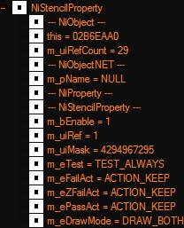
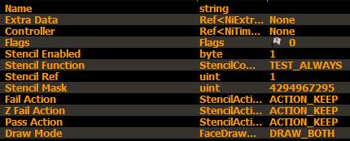
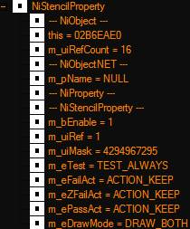
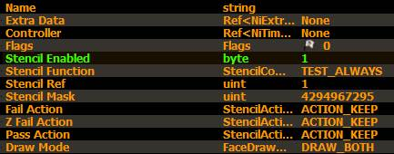
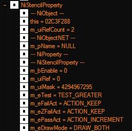
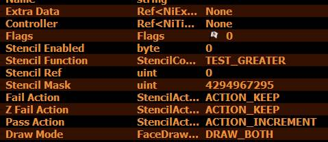

Поле Flag, похоже не оказывает никакого заметного влияния, т.е. всегда можно оставлять в нулях.
Поля Extra Data и Controller, являются наследованными от родительского типа объектов и являются лишь слотами.
Т.е. не выполняют для свойств трафареты никаких функций.
Stencil Enabled
Включает использование.
Т.е. если трафарет настраивается на использование с несколькими условиями, обязательно следует поставить 1.
Для "простых случаев" требующих только отрисовки обратной стороны некоторой поверхности, можно оставлять в значении 0.
Stencil Function
Устанавливает функцию трафаретного тестирования.
Эта функция применяется к хранимому значению трафарета и значению параметра Stencil ref.
Т.е. если одной поверхности и другой поверхности = ХХ, то выполняем действие.
Либо рисуем, либо не рисуем, либо изменяем значение на +-1 и воздействуем полученным значением на какую-то другую поверхность.
Для "простых случаев", достаточно установить TEST_ALWAYS.
Хотя можно и вовсе не трогать, установить BOTH (см. далее) и довольно.
Значение Stencil ref - не используется.
Т.е. если нужно получить отрисовку поверхностей в обе стороны, достаточно установить BOTH.
И все! Даже с функцией Never, отрисовка сторон будет работать.
Но все же, лучше поставить Always.
Для методов продвинутого использования следует указать "правильное" значение.
Для "мониторов" - как правило это будет, всегда ALWAYS.
Для "картинок" - в зависимости от целей.
GL_ALWAYS
Тест глубины всегда проходит успешно.
GL_NEVER
Тест глубины никогда не проходит успешно.
GL_LESS
Тест глубины проходит успешно, если значение глубины фрагмента меньше сохраненного значения глубины.
GL_EQUAL
Тест глубины проходит успешно, если значение глубины фрагмента равно сохраненному значению глубины.
GL_LEQUAL
Тест глубины проходит успешно, если значение глубины фрагмента меньше или равно сохраненному значению глубины.
GL_GREATER
Тест глубины проходит успешно, если значение глубины фрагмента больше сохраненного значения глубины.
GL_NOTEQUAL
Тест глубины проходит успешно, если значение глубины фрагмента не равно сохраненному значению глубины.
GL_GEQUAL
Тест глубины проходит успешно, если значение глубины фрагмента больше или равно сохраненному значению глубины.
Retrieve and set the stencil buffer test function used to test the reference value against the buffer value.
This default constructor creates a property with the enable flag set to false, the function set to TEST_GREATER, the reference value set to 0, the mask set to 0xFFFFFFFF, the failure action set to ACTION_KEEP, the Z-buffer failure action set to ACTION_KEEP, and the pass action set to ACTION_INCREMENT. The draw mode will be set to DRAW_CCW_OR_BOTH.
Stencil Ref
Это определяет эталонное значение для трафаретного теста.
Содержимое трафаретного буфера сравнивается с этим значением.
Т.е. эта опция является ключом к взаимодействию стенсильных свойств между собой.
В случаях, когда нужно отрисовать только обратную сторону, оставить по умолчанию.
Т.е. значение = 0.
Но для более сложных, здесь следует указать некоторое произвольное число.
Т.е. заданное здесь число начинает работать триггером взаимодействия объектов с таким же, или близким к нему, значением!
Все объекты в файле, или в сцене, т.к. действие оказывает глобальный эффект на все модели содержащие свойства трафарета, начнут взаимодействовать друг с другом.
При этом, все объекты с близкими числами, также могут учитываться!
Например, триггер числом (к примеру) 1024 свяжет все прочие объекты с таким же числом.
Отображение зависит также и от режима указанного в Stencil Function.
Имеется в виду перекрытие одних объектов другими.
Т.е. если указано NOT_EQUAL то объект с триггером 1024 не будет рисовать объекте с этим же триггером.
Благодарности Greatness7, изучившему этот момент столь внимательно!
05 2020, но лучше "поздно" чем никогда!)
Retrieve and set the stencil reference value, which is compared against the stencil value at an individual pixel to determine the success of the stencil test.
Stencil Mask
Устанавливает маску, использующуюся в операции побитового И с хранимым и эталонным значением перед их непосредственным сравнением.
Т.е. вносит некоторую поправку в просчеты.
В большинстве случаев, оставлять по умолчанию, т.е. значение менять не требуется.
Маска влияет на отображение объекта.
Объект с чистой (0) маской может показывать отсутствие эффекта от свойств трафарета отображаясь в полной мере всегда и везде.
Но при увеличении значения маски от 5 до 25 объект начинает работать согласно задуманному.
Маска может принимать любые числа, кроме выше отмеченных.
Нифскоп по умолчанию устанавливает его как: 4294967295
Это равно -1.
Т.е. если вбить в строку -1, получится выше означенное число.
Что равно отсутствию тестирования маски.
Retrieve and set the value of the stencil buffer mask that is AND-ed with the reference and buffer value prior to comparing and writing the buffer.
Fail Action
Методы тестирования буфера стенсильных свойств.
Условие для действия, выполняемого в случае провала трафаретного теста.
Во всех 3х позициях Fail Action, Z Fail Action, Pass Action доступны значения:
ACTION_KEEP
Хранящееся в данный момент значение трафарета сохраняется.
ACTION_ZERO
Трафаретное значение обнуляется.
ACTION_REPLACE
Трафаретное значение заменяется эталонным значением, установленным функцией glStencilFunc.
ACTION_INCREMENT
Трафаретное значение увеличивается на единицу, если оно меньше максимального значения.
ACTION_DECREMENT
Трафаретное значение уменьшается на единицу, если оно превышает минимальное значение.
ACTION_INVERT
Побитово инвертирует текущее значение буфера трафарета.
Retrieve and set the action that is taken in the stencil buffer when the stencil test fails.
Z Fail Action
Условие для действия, выполняемого в случае, если трафаретный тест пройден, а тест глубины — нет.
Retrieve and set the action that is taken in the stencil buffer when the stencil test passes but the pixel fails the Z-buffer test.
Pass Action
Условие для действия, выполняемого в случае, если оба теста пройдены
Retrieve and set the action that is taken in the stencil buffer when the stencil test passes and the pixel passes the Z-buffer test. Descriptions of the actions are included below in the "Notes" section.
Draw Mode
Указывает направление отображение прорисовки текстуры.
Для простых случаев, отрисовки только обратной стороны объекта, указать DRAW_BOTH.
Для использования трафаретов в качестве "мониторов" и "картинок" - зависит от целей.
DRAW_CCW_OR_BOTH - дефолтное значение. Рисуем все как есть.
DRAW_CCW - всегда рисуем только переднюю сторону.
DRAW_CW - всегда рисуем только обратную сторону поверхности, передняя не отображается.
DRAW_BOTH - всегда рисуем обе стороны объекта. И переднюю и обратную.
Retrieve and set the drawing (or culling) mode used to draw the object. Since stencil buffered objects are often double-sided, this value is set on the NiStencilProperty. Note that this value is completely independent from the stencil mode and flag. Its value will be used even if stencil buffering is disabled.
DRAW_BOTH
- текстура идет на обе стороны поверхности меша.
Это для "простого случая". Т.е. меняем здесь значение на BOTH и получаем отражение поверхности на ее другую сторону.
DRAW_CW
- отображает текстуру только на внутреннюю сторону меша.
При этом объект не теряет ориентацию колижена, как бывает в случае физического переворачивания сетки во внутрь. (см. Flip faces) при отсутствии RootCollision.
Т.к. здесь дело только в отрисовке текстуры, а не оболочек шейпа.
DRAW_CCW
- текстура ТОЛЬКО на внешней стороне.
Что является обычным состоянием объекта.
DRAW_CCW_OR_BOTH
- текстура только на внешней стороне.
Равно отсутствию обработки просчета направления отрисовки.
Свойства по представлению SSG и Нифскопа.






Настройки игровой воды, можно воспроизвести в ниф файле.